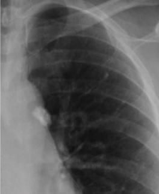

Ficha del catálogo
Tuberculosis primaria
- Sistema
- Respiratorio
- Modalidad
- RX
- Región
- Tórax
- Dificultad
- Intermedio
Primera infección por el bacilo tuberculoso en un paciente sin inmunidad previa, más frecuente en niños y en adultos jóvenes. Se caracteriza por una consolidación parenquimatosa acompañada de adenopatías, con predominio de la afectación ganglionar sobre la pulmonar. En muchos casos evoluciona a la curación con calcificaciones residuales.
Técnica
Radiografía de tórax posteroanterior y lateral, con tomografía con contraste cuando se necesita valorar las adenopatías o las complicaciones de la vía aérea.
Qué observar
- Consolidación parenquimatosa de cualquier lóbulo, sin predilección apical
- Adenopatías hiliares y paratraqueales, típicamente unilaterales y desproporcionadas
- Centro hipodenso en las adenopatías tras el contraste por necrosis caseosa
- Derrame pleural, más habitual en adolescentes y adultos jóvenes
- Atelectasia por compresión bronquial de las adenopatías, sobre todo en el niño
- Nódulo calcificado residual con ganglio calcificado en la fase de curación
Hallazgos
Consolidación pulmonar con adenopatías hiliares unilaterales llamativas, a veces con derrame pleural acompañante.
Perlas
En la forma primaria mandan los ganglios y en la posprimaria manda el parénquima apical con cavitación. Unas adenopatías unilaterales grandes junto a una consolidación banal en un paciente joven deben hacer pensar en tuberculosis.
Diagnóstico diferencial
- Tuberculosis posprimaria
- Afectación de segmentos apicales y posteriores con cavitación y sin adenopatías dominantes.
- Linfoma
- Adenopatías bilaterales y voluminosas sin consolidación acompañante.
- Sarcoidosis
- Adenopatías hiliares bilaterales y simétricas con nódulos perilinfáticos.
Simuladores
- Timo prominente en el lactante
- Vasos hiliares prominentes confundidos con adenopatías
- Neumonía bacteriana con adenopatía reactiva
Por modalidad
- RX
- Muestra la consolidación y el ensanchamiento hiliar
- TC
- Caracteriza las adenopatías necróticas y la afectación bronquial
Protocolo
Radiografía frontal y lateral, y tomografía con contraste en fase venosa cuando se sospecha afectación ganglionar o compresión de la vía aérea.
Clasificación
Errores frecuentes
- Descartar tuberculosis porque la consolidación no está en los vértices
- No valorar el hilio contralateral y el mediastino en las radiografías pediátricas
- Interpretar la calcificación residual como enfermedad activa

tuberculosis primaria adenopatias hiliares consolidacion pediatria infeccion